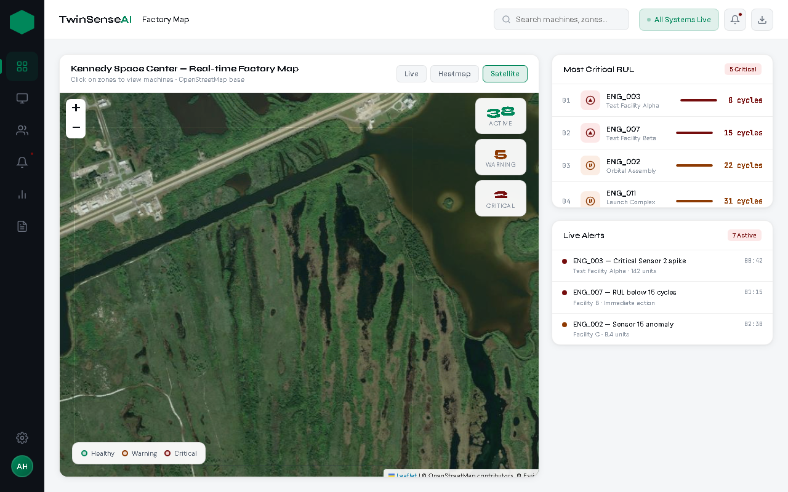
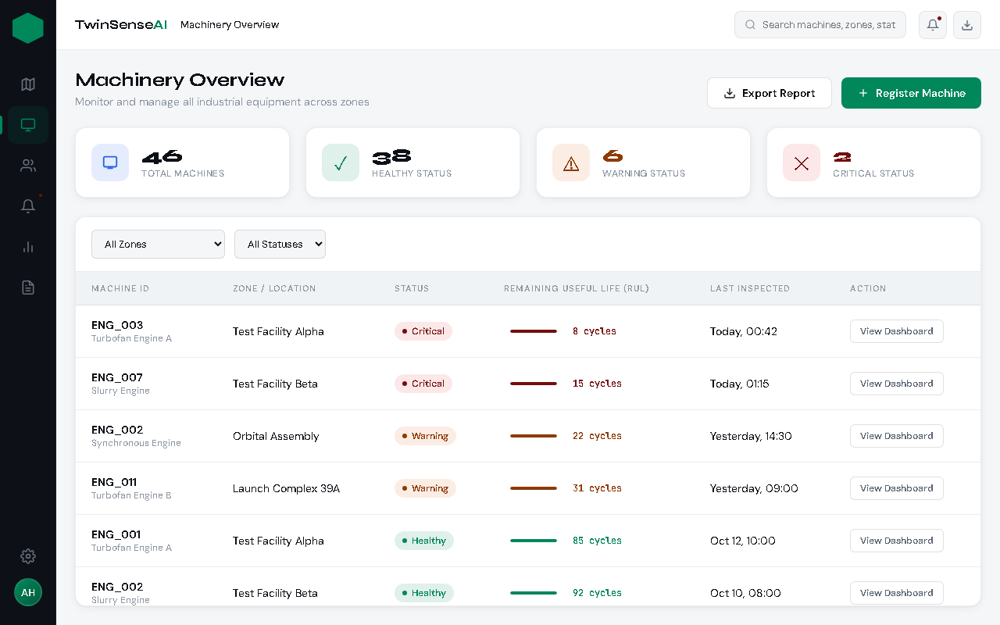
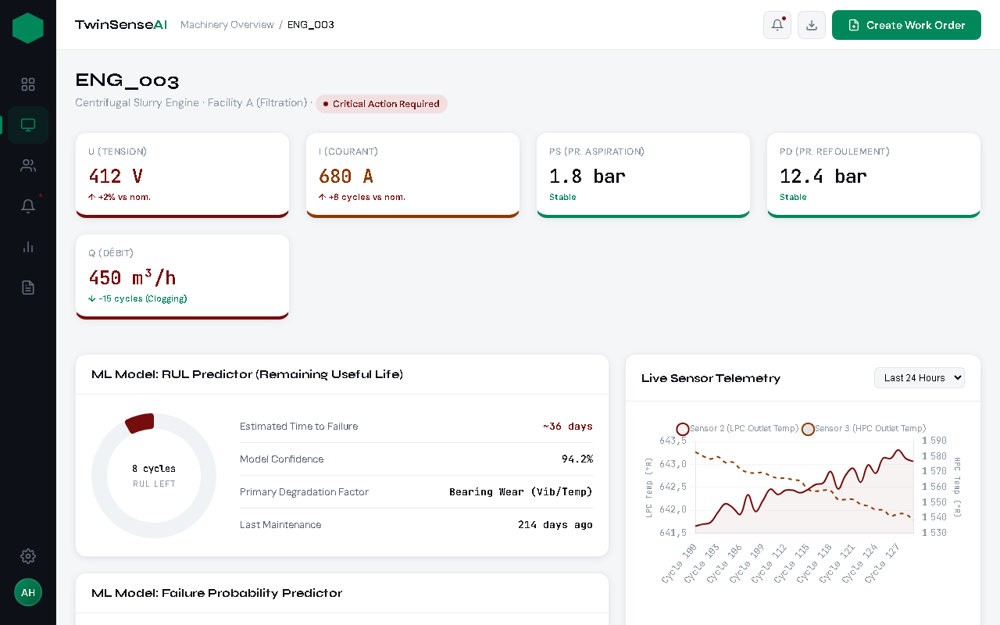
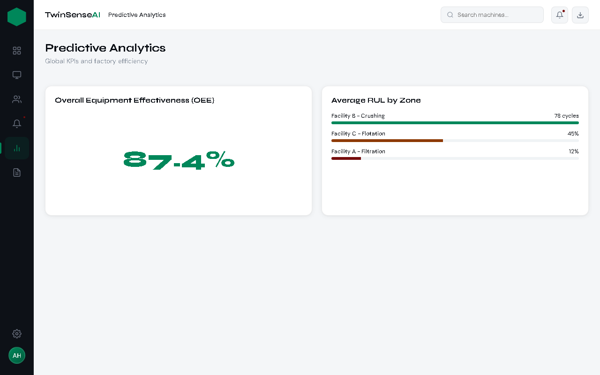
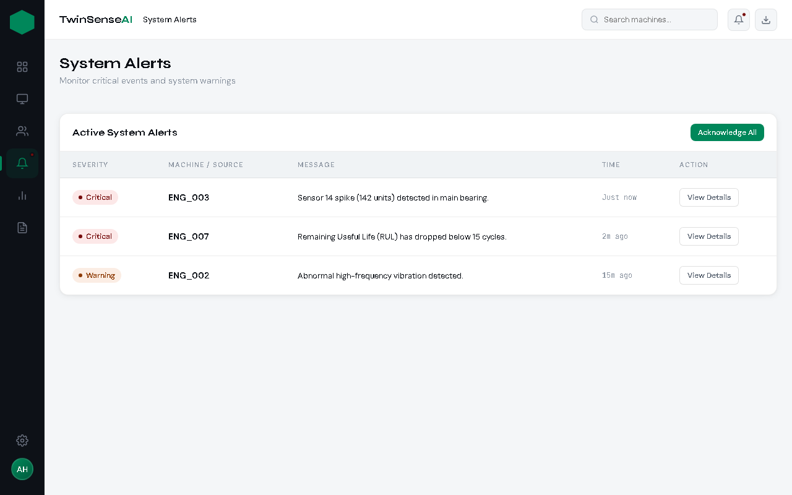

Architecture DataOps & MLOps
Le script Python génère les moteurs virtuels et publie sur le topic Kafka sensor-data.
Orchestration asynchrone des micro-batches massifs haute fréquence.
Transformation Bronze → Silver → Gold (Moyennes glissantes & écart-types).
Garantir l'intégrité et la résilience du cycle de vie ML
Traitement des séquences (30 cycles) pour capturer le momentum d'usure :

Tableau de bord principal et Cartographie (Plein Écran).
(Appuyez sur la flèche du bas pour voir plus ↓)

Suivi de la santé et du statut opérationnel de toute la flotte.

Analyse des capteurs CMAPSS et prédiction du RUL.

Tendances historiques des défaillances.

Système de notifications et assignation d'équipes de maintenance.
"Transformer la télémétrie brute en décisions prescriptives autonomes."
TwinSense AI prouve la viabilité d'un système où l'Intelligence Artificielle se maintient et s'auto-guérit face au chaos industriel continu.